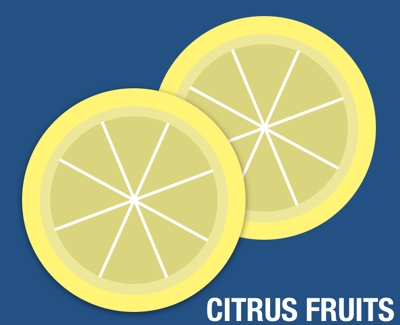
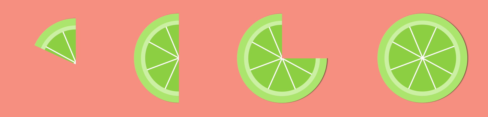

P L A Y
I put up a lot of my side projects, in-the-process ideas and illustrations on Behance so feel free to head over there to take a look.
I've also put a few of my favorites here for your convenience :)
boredgame
These days, there are less and less folks who play your traditional boardgames and card games. Games like pick-up-sticks, Uno, jacks, and other analog games that used to be extremely popular past times are being replaced by handheld consoles, computer games, VR/AR etc.
I created this graphic as a conversation starter. Juxtaposing a few key features (cards, die) in analog games with a handheld console, I thought about what games children these days play for fun. Do these pasttime differences create generational gaps? How do we bridge them?

Color Study
A little while back I taught myself a bit more about color theory through doing a simple exercise with some citrus fruits. I played around with the colors of different citrus fruits as well as their backgrounds. The focus of this study was to gain an overall better grasp on primary, secondary and tertiary colors, and how color harmony is created through using complementary or analagous combinations.




